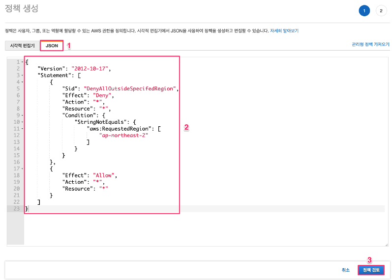
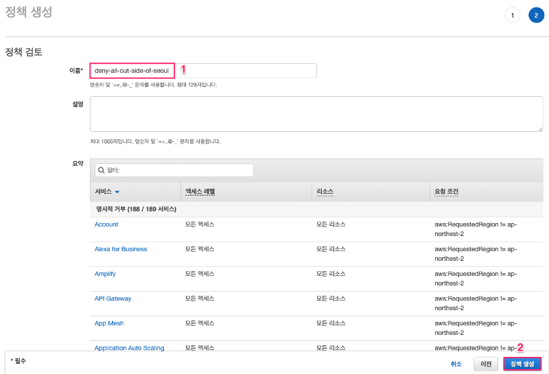
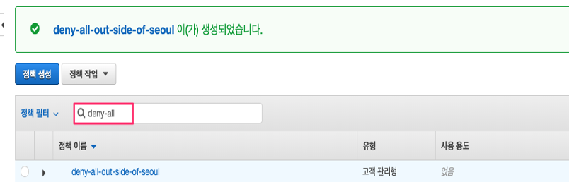

이 과정에서 생성하게 될 “ec2admin” IAM 사용자는 AWS 에서 제공하는 “AWS 관리형 정책”을 할당받게 되며 할당받는 AmazonEC2FullAccess 권한에 따라 EC2 인스턴스의 사용에 필요한 권한을 갖게 됩니다.
IAM 정책은 사용 유형에 따라 관리형 정책과 인라인 정책으로 나누어집니다. 관리형 정책은 별도로 만들어진 정책을 여러 사용자나 그룹 혹은 역할에 할당하여 재사용할 수 있도록하는 정책을 의미하며 AWS 관리형 정책과 고객 관리형 정책, 이렇게 2가지가 존재합니다. AWS 관리형 정책은 AWS 에서 계정 생성 후 즉시 사용할 수 있도록 주요 사용자 유형에 따라 권한을 정리한 정책을 의미하며 AWS 에서 관리하는 정책이므로 삭제 및 수정이 불가능합니다. 고객 관리형 정책은 고객이 직접 생성하는 관리형 정책으로서 고객의 필요에 따라 생성, 수정, 삭제가 가능합니다. 인라인 정책은 관리형 정책과 다르게 특정 사용자나 역할에 한정되어 적용되는 즉, 재사용이 불가능한 정책을 말합니다. 이 Lab 에서는 고객 관리형 정책을 생성하도록 하겠습니다.
정책 생성 화면에서 “JSON” 탭을 선택한 후 아래의 IAM 정책을 입력합니다. 그리고 정책 검토 버튼을 클릭합니다.
{
"Version": "2012-10-17",
"Statement": [
{
"Sid": "DenyAllOutsideSpecifedRegion",
"Effect": "Deny",
"Action": "*",
"Resource": "*",
"Condition": {
"StringNotEquals": {
"aws:RequestedRegion": [
"ap-northeast-2"
]
}
}
},
{
"Effect": "Allow",
"Action": "*",
"Resource": "*"
}
]
}

정책 검토 화면에서 “이름” 에 식별 가능한 이름을 입력한 후 “정책 생성” 버튼을 클릭합니다. 
아래와 같이 “정책 필터” 에 “deny-all” 을 입력하여 생성한 정책이 정상적으로 생성되었음을 확인합니다. 